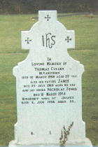
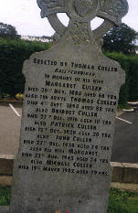

| Follow the above link to the directory for the archives or click the graphic below to visit the Homepage. |
 | Cullen Monument Inscriptions Co. Wexford, Ireland extracted from the works of Ian & Brian Cantwell |
| In Loving Memory Of THOMAS CULLEN Bryanstown Died 12 March 1968 Aged 57 yrs also his Father JAMES Died 23 July 1968 aged 83 yrs and his Uncle NICHOLAS JONES Died 11 March 1954 BRIDGET wife of JAMES Died 4 Jan 1974 Aged 84 |  |
For more information on this family, visit The Cullen Geneological History Page The site, run by Rob Cullen, of Onehunga, Auckland, New Zealand, concerns the descendants of James Cullen (b.1885 Bannow, d.1968) and Bridget Jones (1890-1974). James Cullen's father was also named James. Descendants are located today in Co Wexford and in New Zealand. Also on the site is a much better image of the above stone. | |
 Photo courtesy of Ron & Josephine Lowe | Erected by Thomas Cullen Ballyconnigar In Memory of his Wife Margaret Cullen Died 20'th Nov. 1885 Aged 60 Yrs. Also the above Thomas Cullen Died 4'th Sept. 1894 Aged 88 Yrs. Also Bridget Cullen Died 27'th Dec. 1916 Aged 10 Yrs. Also Patrick Cullen Died 12'th Oct. 1928 Aged 20 Yrs. Also John Cullen Died 22'nd Dec. 1928 Aged 74 Yrs. Also his Wife Margaret Died 22'nd Aug. 1945 Aged 74 Yrs. Also Michael Cullen Died 19'th March 1982 Aged 79 Yrs. |